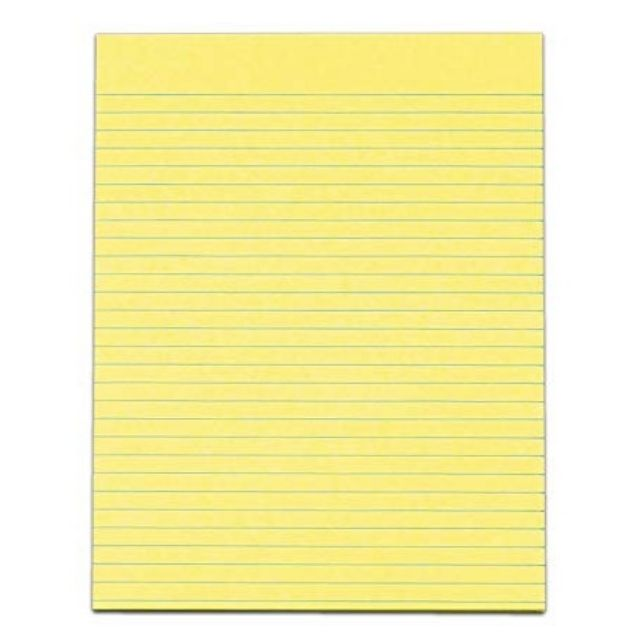

Yellow Pad

Price per piece ₱25.00
______________________________________
The yellow legal a scrath pads of yellow, lined paper
started historical life from cheap paper offcuts.
Cheap paper traditionally were unbleached, so the
typical colour was yellowish or pinkish.
Back